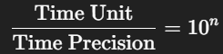

⏱️ timescale in SystemVerilog
In SystemVerilog, the timescale directive defines how time delays using # are interpreted in simulation. It's essential for controlling timing accuracy, especially for clock generation and delay modeling.
📌 1. Understanding Time Unit and Precision
Syntax:
`timescale <time_unit> / <time_precision>- Time Unit: Base unit for delays (e.g., 1ns, 10ps).
- Time Precision: Smallest resolvable time step (e.g., 1ps).
Formula to determine how many decimal places are preserved:

🎯 2. Effect of timescale on Delay Rounding
🧪 Case 1: `timescale 1ns / 1ns
- Decimal precision: 0 (i.e., delays rounded to nearest integer)
| Specified Delay | Rounded Delay |
|---|---|
| #10.1 | #10 |
| #10.6 | #11 |
| #31.25 | #31 |
🧪 Case 2: `timescale 1ns / 1ps
- Decimal precision: 3 (up to 0.001ns resolution)
| Specified Delay | Rounded Delay |
|---|---|
| #10.1234 | #10.123 |
| #10.1236 | #10.124 |
| #31.25 | #31.250 |
⏰ 3. Impact on Clock Generation
Incorrect:
`timescale 1ns / 1ns
always #31.25 clk = ~clk; // Interpreted as #31Correct:
`timescale 1ns / 1ps
always #31.25 clk = ~clk; // Interpreted as #31.250📌 4. Recommended timescale for Clock Generation
| Clock Frequency | Half-Period | Recommended Timescale |
|---|---|---|
| 16 MHz | 31.25 ns | 1ns / 1ps |
| 8 MHz | 62.5 ns | 1ns / 1ps |
| 100 MHz | 5 ns | 1ns / 1ps or 1ps / 1ps |
| 1 GHz | 0.5 ns | 1ps / 1ps |
✅ Conclusion
- Use
`timescalewith appropriate precision for accurate simulation. - For fractional delays, use
1ns / 1psor better. - Avoid overly high precision (e.g., 1fs) as it can slow down simulations.